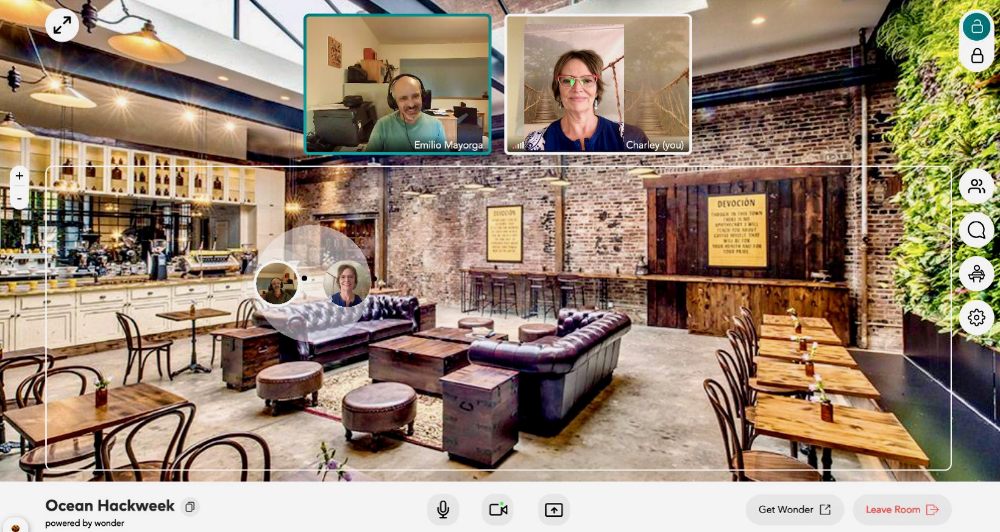

OHW21 Global Rolling Social/Coffee Breaks
After we get this hackweek kicked-off and project teams formed we will start inviting you to come hangout and meet others across the globe in our virtual break space. Breaks will be announced every 3-hours and will last for 15-minutes, but of course you can stay longer. In fact, the space is yours to use for the entire hackweek for any purposes including meeting with your project team. The space is open starting now, July 30 until soon after OHW21 ends. We will be using the web-based platform from Wonder.me. The supported browsers are Google Chrome & Microsoft Edge, & Firefox works equally as well. Sometimes Linux has issues, but we have seen it work. You may need to fiddle to get the microphone or camera to work if you have multiple ones connected. It will not work on devices like ipads/smart phone/etc. Alas, not perfect, but kinda fun.
When you click on the Wonder Room link you will be asked for permission to use your camera and microphone and to take a selfie with your computer to use for your avatar. Don’t over think the picture, it’s less scary walking up to someone with a picture vs initials. You will be dropped in the space where you can roam about freely between people/pods. As soon as your avatar is near another avatar, your audio/visuals will activate, and you will be able to see and hear only the people close by. It will deactivate when you move apart. Point and click your mouse to navigate and bump into others. More information about our global breaks will come when we get them started but for now feel free to test and checkout the space. Right now, the space is a coffee shop in Brooklyn NY.
Hosting a Coffee Break
We intend to have at least one OHW21 organizer or helper serving in the good host role for each coffee break AND we won't stop any of you if you feel that you would like to help us host/create a warm & welcoming environment in which we can get to know each other. Our hunch is that the more of us that take on hosting by creating a super inviting space, the more likely it will be that some of us will have one of those serendipitous encounters that people refer to when asked “How did you ever come up with the idea to ….?”
What this looks like in practice is making sure everyone that joins the space is greeted, can get their A/V working, and understands how to use their mouse to navigate around. If you have issues with the A/V don’t hesitate to ask for help in Slack. Chances are that someone has worked it out. And finally, everyone can be a great host by just making space for others to join your circle and pausing an ongoing conversation long enough to say hello and make introductions.
Coffee breaks are a great place to get questions answered about the hackweek!
